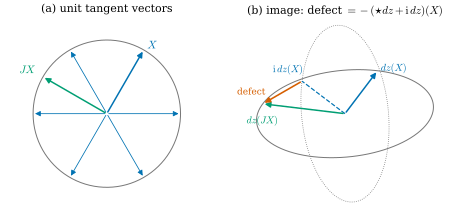
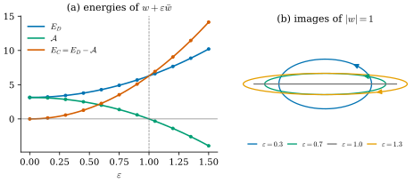

43.4 Conformal Energy on a Riemann Surface
Goals
- 곡면 위 1-form과 2-form의 Hodge star를 complex structure \(J\)로 쓰고, 1-form의 \(\star\)가 metric의 conformal 배율에 무관함을 설명할 수 있다.
- \(\mathbb{C}\)-valued form의 Hermitian inner product를 정의하고, Cauchy–Riemann equations를 \(\star dz = -\mathrm{i}\,dz\)로 쓸 수 있다(Crane의 노트와 부호가 다른 이유 포함).
- conformal energy \(E_C\)를 정의하고 \(E_C = E_D - \mathcal{A}\)를 증명하며, signed area \(\mathcal{A}\)가 boundary 값만으로 정해진다는 것을 Stokes's theorem으로 보일 수 있다.
- holomorphic이면 harmonic임을 증명하고, boundary를 고정한 최소화가 harmonic map을 주지만 holomorphic map은 주지 않는 예를 들 수 있다.
Prerequisites
- Definition 43.3.1, Proposition 43.3.2, Definition 43.3.4: complex structure와 holomorphic map
- Proposition 38.3.6(b): 곡면의 1-form Hodge star \((\star\alpha)(X) = -\alpha(X')\)
- Definition 35.5.2, Proposition 35.5.3: L2 inner product, Definition 35.5.10: vector-valued form
- Definition 42.2.1, Theorem 42.2.4: Dirichlet energy와 Dirichlet's principle, (42.1.4): \(\Delta = \star d\star d\)
- Definition 5.7.1: closed curve의 signed area, Theorem 35.4.5: Stokes's theorem
Motivation
Section 43.3은 곡면에서 평면으로 가는 map이 conformal인 것을 \(dz(JX) = \mathrm{i}\,dz(X)\)로 썼다. 이 조건은 점마다 성립하거나 성립하지 않는다. 그런데 Section 43.1에서 보았듯이 mesh에서는 이 조건을 정확히 만족시킬 수 없다. 필요한 것은 “얼마나 깨는가”를 하나의 수로 재는 양이다. 그 양을 적분으로 정의하면 Chapter 42의 Dirichlet energy와 같은 도구, 곧 \(d\)와 \(\star\)와 L2 inner product로 계산할 수 있고, Chapter 36의 DEC로 그대로 이산화할 수 있다 [Cr §7.3].
그러려면 조건 (43.3.2)를 differential form의 언어로 옮겨야 한다. 열쇠는 1-form의 Hodge star가 \(J\) 자체라는 관찰이다. 그것으로 Cauchy–Riemann equations가 \(\star dz = -\mathrm{i}\,dz\)라는 한 줄이 되고, 양변의 차이의 크기가 conformal energy가 된다. 마지막에 그 energy가 Chapter 42가 남긴 질문의 답, 곧 “Dirichlet energy − image의 signed area”라는 것을 증명한다(Exercise 42.6.6).
Differential Forms on a Surface and the Hodge Star
이 절에서 \(S\)는 oriented surface이고 metric \(g\)를 가진다(\(\R^3\)의 곡면이면 induced metric). 계산은 매개화의 parameter 평면에서 해도 되고, 그때 \(\star\)는 \(g_q\)에 대한 것이다(Section 38.3). 2차원에서는 form의 종류가 셋뿐이다. 0-form은 함수, 2-form은 넓이 형식 \(dA\)의 함수배 \(f\,dA\)다. 1-form \(\alpha\)는 \(\alpha = \inner{Y}{\cdot}\)인 vector field \(Y = \alpha^\sharp\)와 같은 정보다(Section 34.3의 sharp). 3-form 이상은 \(0\)이다 [Cr §7.3]. Hodge star는 0-form과 2-form을 바꾸고 1-form을 1-form으로 보낸다.
Proposition 43.4.1 (the Hodge star through the complex structure). \(J\)를 \(S\)의 complex structure(Definition 43.3.1)라 하자.
(a) 1-form \(\alpha\)에 대하여 \(\star\alpha = -\alpha\circ J\), 곧 \((\star\alpha)(X) = -\alpha(JX)\)이다.
(b) 2-form \(\omega\)에 대하여 \(\star\omega = \omega(X, JX)\)이다. 여기서 \(X\)는 아무 unit vector다.
(c) 1-form에서 \(\star\star = -1\)이고, \(\alpha\wedge\beta = \star\alpha\wedge\star\beta\)이다.
(d) 1-form의 \(\star\)는 metric을 \(e^{2\mu}g\)로 바꾸어도 같다. 곧 conformal class와 orientation만으로 정해진다.
Proof. (a) Proposition 38.3.6(b)가 \((\star\alpha)(X) = -\alpha(X')\)이고, 그 \(X'\)이 \(JX\)다(Definition 43.3.1과 그 뒤의 문단). (b) 2차원에서 \(\omega = c\,dA\)이고 \(\star\omega = c\)이다(\(\star dA = 1\)). unit \(X\)에 대해 \((X, JX)\)는 positively oriented orthonormal basis이므로(Proposition 43.3.2(b)) \(dA(X, JX) = 1\)이고, \(\omega(X, JX) = c\)이다. (c) (a)를 두 번 쓰면 \(\star\star\alpha = -(\star\alpha)\circ J = \alpha\circ J\circ J = -\alpha\)이다. 2-form은 \((X, JX)\)에서의 값으로 정해지므로(unit \(X\)) 그곳에서 비교한다. (a)와 \(J^2 = -\id\)로 \((\star\alpha)(X) = -\alpha(JX)\), \((\star\alpha)(JX) = \alpha(X)\)이므로
\[ \begin{aligned} (\star\alpha\wedge\star\beta)(X, JX) &= (\star\alpha)(X)\,(\star\beta)(JX) \\ &\quad - (\star\alpha)(JX)\,(\star\beta)(X) \\ &= -\alpha(JX)\beta(X) + \alpha(X)\beta(JX) \\ &= (\alpha\wedge\beta)(X, JX) \end{aligned} \]
이다. (d) Proposition 43.3.13(b)에서 \(J\)가 같고, (a)는 \(J\)만 쓴다.
(a)가 이 장의 부호 규약의 핵심이다. 이 study set의 \(\star\)는 Chapter 34의 정의(\(\xi\wedge\star\xi\)가 단위 부피)를 따르므로 \(\R^2\)에서 \(\star dx = dy\)이고, 그 결과 1-form에서 \(\star = -(\cdot)\circ J\)이다. (d)는 Chapter 42가 관찰한 것, 곧 2차원에서 1-form의 \(\star\)가 각만 본다는 것(Proposition 42.1.10 뒤의 문단)의 좌표 없는 판이다. (b)의 \(\star\)는 넓이로 나누므로 배율에 의존한다.
map \(z\colon S \to \mathbb{C}\)의 differential \(dz = du + \mathrm{i}\,dv\)는 값이 복소수인 1-form이다. 이런 form을 complex differential form(복소 미분형식)이라 한다. 값을 \(\R^2\)로 보면 \(\R^2\)-valued form(Definition 35.5.10)이고, 새로운 것은 값끼리 복소수 곱셈을 할 수 있다는 것뿐이다. \(\alpha = a + \mathrm{i}b\)(\(a, b\)는 real form)에 대하여 켤레는 \(\bar\alpha = a - \mathrm{i}b\), \(d\)와 \(\star\)는 성분마다 \(d\alpha = da + \mathrm{i}\,db\), \(\star\alpha = \star a + \mathrm{i}\star b\), wedge는 복소수 곱으로 \((a + \mathrm{i}b)\wedge(c + \mathrm{i}e)\) \(= (a\wedge c - b\wedge e) + \mathrm{i}(a\wedge e + b\wedge c)\)이다(Definition 35.5.12의 bilinear product를 복소수 곱셈으로 둔 것) [Cr §7.3.1]. 이 규칙으로 \(\star\)는 \(\mathbb{C}\)-linear이고 \(\overline{\star\alpha} = \star\bar\alpha\)이다.
complex form의 inner product는 실수 판 \(\int\alpha\wedge\star\beta\)(Definition 35.5.2)의 둘째 인자에 켤레를 붙인
로 정한다. 복소수에서 \(\abs{w}^2 = w\bar w\)인 것과 같은 이유다. 0-form에서는 \(\langle\!\langle f, h\rangle\!\rangle = \int f\bar h\,dA\)이다.
Proposition 43.4.2 (the Hermitian inner product of complex forms). compact \(S\) 위의 complex \(k\)-form에 대하여
(a) \(\langle\!\langle\cdot, \cdot\rangle\!\rangle\)는 첫 인자에 대해 \(\mathbb{C}\)-linear이고 \(\langle\!\langle\beta, \alpha\rangle\!\rangle = \overline{\langle\!\langle\alpha, \beta\rangle\!\rangle}\)이다(Hermitian).
(b) \(\alpha = a + \mathrm{i}b\)이면 \(\norm{\alpha}^2 = \norm{a}^2 + \norm{b}^2\)이다. 따라서 \(\norm{\alpha}^2 \ge 0\)이고 등호는 \(\alpha = 0\)일 때뿐이다(positive definite).
(c) \(\norm{\star\alpha} = \norm{\alpha}\)이다. 실수 form에서 (43.4.1)은 Definition 35.5.2와 같다.
Proof. \(\alpha = a + \mathrm{i}b\), \(\beta = c + \mathrm{i}e\)라 하면 \(\star\bar\beta = \star c - \mathrm{i}\star e\)이고
\[ \begin{aligned} \alpha\wedge\star\bar\beta &= (a\wedge\star c + b\wedge\star e) \\ &\quad + \mathrm{i}\,(b\wedge\star c - a\wedge\star e) \end{aligned} \]
이다. (a) linearity는 wedge와 \(\star\)의 linearity에서 나온다. 실수 form에서 \(a\wedge\star c = c\wedge\star a\)이므로(Proposition 35.5.1) \(\alpha\)와 \(\beta\)를 바꾸면 실수부는 그대로이고 허수부 \(b\wedge\star c - a\wedge\star e\)는 \(e\wedge\star a - c\wedge\star b = a\wedge\star e - b\wedge\star c\)로 부호만 바뀐다. (b) \(\beta = \alpha\)이면 허수부가 \(b\wedge\star a - a\wedge\star b = 0\)이고 실수부의 적분은 \(\norm{a}^2 + \norm{b}^2\)이다. positive definite는 실수 판(Proposition 35.5.3(b))에서 나온다. (c) \(\star\)는 성분마다 작용하므로 \(\norm{\star\alpha}^2 = \norm{\star a}^2 + \norm{\star b}^2 = \norm{a}^2 + \norm{b}^2\)이다(Proposition 35.5.3(c)). 실수 form이면 \(b = e = 0\)이다.
이제 Cauchy–Riemann equations를 form으로 쓸 수 있다.
Proposition 43.4.3 (Cauchy–Riemann with the Hodge star). smooth \(z\colon S \to \mathbb{C}\)에 대하여
Proof. Proposition 43.4.1(a)로 \((\star dz)(X) = -dz(JX)\)이다. 따라서 \(\star dz = -\mathrm{i}\,dz\)는 모든 \(X\)에서 \(dz(JX) = \mathrm{i}\,dz(X)\), 곧 (43.3.2)와 같다. 둘째도 같다.
평면에서 \(z = x + \mathrm{i}y\)이면 \(\star dz\) \(= \star dx + \mathrm{i}\star dy\) \(= dy - \mathrm{i}\,dx\) \(= -\mathrm{i}(dx + \mathrm{i}\,dy)\) \(= -\mathrm{i}\,dz\)이므로 항등 map은 holomorphic이다. 실수부와 허수부로 나누면 \(\star du + \mathrm{i}\star dv = dv - \mathrm{i}\,du\), 곧
이다. 둘째 식은 첫째 식에 \(\star\)를 걸면 나오므로(\(\star\star = -1\)) 실질적인 조건은 하나다. \(dv\)가 \(du\)를 \(90^\circ\) 돌린 것이라는 뜻이고, \(\R^2\)에서 \(du = u_x\,dx + u_y\,dy\)를 넣으면 \(\star du = u_x\,dy - u_y\,dx\)이므로 \(v_x = -u_y\), \(v_y = u_x\), 곧 (43.2.2)다. 이때 \(v\)를 \(u\)의 conjugate harmonic function(켤레 조화함수)이라 한다 [CMU-DDG L19–20] slide 19.
Conformal Energy
(43.4.2)의 양변의 차이 \(\star dz + \mathrm{i}\,dz\)는 \(z\)가 holomorphic일 때 정확히 \(0\)인 complex 1-form이다. 그 크기를 잰다.
Definition 43.4.4 (conformal energy). compact oriented surface \(S\)(boundary가 있어도 된다)와 smooth \(z\colon S \to \mathbb{C}\)에 대하여
를 \(z\)의 conformal energy(등각 에너지)라 한다.
Proposition 43.4.2(b)로 \(E_C(z) \ge 0\)이고, \(E_C(z) = 0\)인 것은 \(\star dz + \mathrm{i}\,dz = 0\), 곧 \(z\)가 holomorphic인 것(Proposition 43.4.3)과 같다. 계수 \(\tfrac14\)은 아래 Theorem 43.4.6의 식이 깔끔해지도록 고른 것이다. Proposition 43.4.1(d)에 따라 \(E_C\)는 \(S\)의 metric이 아니라 complex structure \(J\)에만 의존한다. 그래서 이름이 “Riemann surface 위의” conformal energy다.
한 점에서 무엇을 재는지 Figure 43.4.1로 보자. 왼쪽 (a)는 한 점의 unit tangent vector들이고, 파란 \(X\)와 초록 \(JX\)가 표시되어 있다. 오른쪽 (b)는 conformal이 아닌 linear map \(dz(X) = \alpha X + \beta\bar X\)(\(\alpha = 1 + 0.2\mathrm{i}\), \(\beta = 0.35\))의 image다. 단위원이 ellipse(회색)가 되고, 파란 \(dz(X)\)를 평면에서 \(90^\circ\) 돌린 점선 \(\mathrm{i}\,dz(X)\)와, \(JX\)를 먼저 돌리고 옮긴 초록 \(dz(JX)\)가 어긋난다. 둘의 차이(주홍)가 \(-(\star dz + \mathrm{i}\,dz)(X)\)다. 이 차이의 길이는 \(X\)를 어느 방향으로 잡아도 \(2\abs{\beta} = 0.70\)으로 같다. Lemma 43.2.1(c)의 분해에서 \(\alpha X\) 부분은 \(\mathrm{i}\)와 교환하고 \(\beta\bar X\) 부분만 어긋나기 때문이다.

Example 43.4.5 (conformal energies of the running examples). 평면 영역에서 \(w = x + \mathrm{i}y\)를 좌표로 쓰고 \(\star dw = -\mathrm{i}\,dw\), \(\star d\bar w = \mathrm{i}\,d\bar w\)(\(\bar w\)는 antiholomorphic)를 쓴다. \(\norm{dw}^2 = \norm{d\bar w}^2 = \norm{dx}^2 + \norm{dy}^2 = 2\abs{D}\)(\(\abs{D}\)는 영역의 넓이)이다. (a) unit disk에서 \(z = w\)이면 \(\star dz + \mathrm{i}\,dz = 0\)이므로 \(E_C = 0\)이다. (b) \(z_\varepsilon = w + \varepsilon\bar w\)이면 \(\star dz_\varepsilon + \mathrm{i}\,dz_\varepsilon\) \(= -\mathrm{i}\,dw + \mathrm{i}\varepsilon\,d\bar w + \mathrm{i}\,dw + \mathrm{i}\varepsilon\,d\bar w\) \(= 2\mathrm{i}\varepsilon\,d\bar w\)이므로 unit disk에서 \(E_C = \tfrac14\cdot4\varepsilon^2\cdot2\pi = 2\pi\varepsilon^2\)이다. (c) 정사각형 \([0, 1]^2\)을 직사각형으로 늘이는 \(z = ax + \mathrm{i}y\)(\(a \gt 0\))는 Lemma 43.2.1(c)로 \(z = \tfrac{a + 1}{2}w + \tfrac{a - 1}{2}\bar w\)이므로 (b)와 같은 계산으로 \(E_C = \tfrac14\big(2\cdot\tfrac{\abs{a - 1}}{2}\big)^2\cdot2 = \tfrac12(a - 1)^2\)이다. \(a = 1\)에서만 \(0\)이고, \(a = 2\)와 \(a = 1/2\)은 같은 비로 각을 깨지만 energy는 \(\tfrac12\)과 \(\tfrac18\)로 다르다. \(E_C\)는 넓이의 배율 자체가 아니라, 배율이 섞인 각의 왜곡을 잰다(Proposition 31.6.3(a)와 같은 관찰).
Verification: verify/v-43-4-conformal-energy.py
conformal energy는 아직 계산하기 좋은 꼴이 아니다. 다음 정리가 그것을 Chapter 42의 Dirichlet energy와, 넓이로 나눈다. Dirichlet energy는 map의 성분마다 쓴다. \(z = u + \mathrm{i}v\)에 대해
로 둔다. 첫 식의 두 번째 등호는 Proposition 43.4.2(b)와 Definition 42.2.1이다. 둘째 식의 등호는 \(dz\wedge d\bar z\) \(= (du + \mathrm{i}\,dv)\wedge(du - \mathrm{i}\,dv)\) \(= -2\mathrm{i}\,du\wedge dv\)에서 나온다. \(du\wedge dv\)는 평면의 넓이 형식 \(dx\wedge dy\)를 \(z\)로 당긴 것이므로 \(\mathcal{A}(z)\)는 image의 넓이를 orientation의 부호와 함께 센 것이다(아래 Proposition 43.4.7).
Theorem 43.4.6 (conformal energy is Dirichlet energy minus signed area). compact oriented surface \(S\)와 smooth \(z\colon S \to \mathbb{C}\)에 대하여
이다.
Proof idea: \(\norm{\star dz + \mathrm{i}\,dz}^2\)을 Hermitian inner product로 전개하면 두 제곱항은 모두 \(\norm{dz}^2\)이고, 교차항이 \(\star\)가 둘 들어간 wedge가 되어 Proposition 43.4.1(c)로 \(dz\wedge d\bar z\)가 된다.
Proof. Proposition 43.4.2(a)로 \(\norm{\alpha + \beta}^2 = \norm{\alpha}^2 + \norm{\beta}^2 + 2\operatorname{Re}\langle\!\langle\alpha, \beta\rangle\!\rangle\)이다. \(\alpha = \star dz\), \(\beta = \mathrm{i}\,dz\)로 두자. Proposition 43.4.2(c)로 \(\norm{\star dz} = \norm{dz}\)이고, \(\abs{\mathrm{i}} = 1\)이므로 \(\norm{\mathrm{i}\,dz} = \norm{dz}\)이다. 교차항은 \(\overline{\mathrm{i}\,dz} = -\mathrm{i}\,d\bar z\)와 Proposition 43.4.1(c)로
\[ \begin{aligned} \langle\!\langle\star dz, \mathrm{i}\,dz\rangle\!\rangle &= \int\star dz\wedge\star(-\mathrm{i}\,d\bar z) = -\mathrm{i}\int\star dz\wedge\star d\bar z \\ &= -\mathrm{i}\int dz\wedge d\bar z = -2\mathcal{A}(z) \end{aligned} \]
이다(마지막은 (43.4.5)). 이것은 실수다. 따라서 \(\norm{\star dz + \mathrm{i}\,dz}^2 = 2\norm{dz}^2 - 4\mathcal{A}(z)\)이고, \(\tfrac14\)을 곱하면 \(E_C = \tfrac12\norm{dz}^2 - \mathcal{A}(z) = E_D(z) - \mathcal{A}(z)\)이다.
이 정리가 말하는 것: conformal energy는 두 익숙한 양의 차이다. 하나는 Chapter 42의 Dirichlet energy이고 \(z\)의 2차식이다. 다른 하나는 image의 signed area이고 역시 \(z\)의 2차식이다. 그래서 \(E_C\)는 \(z\)의 2차식(Hermitian quadratic form)이고, 그 최소화는 선형대수 문제가 된다. 반대 부호 \(\star dz - \mathrm{i}\,dz\)로 정의하면 같은 계산이 \(E_D + \mathcal{A}\)를 주는데, 이것은 antiholomorphic map의 energy다(Exercise 43.4.4). Crane의 노트에서는 \(\star\)의 부호가 반대이므로 \(\star dz - \mathrm{i}\,dz\)가 맞다(위의 Conventions 상자).
Proposition 43.4.7 (the signed area depends only on the boundary). (a) 점마다 \(du\wedge dv = (\det dz_p)\,dA\)이다. 여기서 \(\det dz_p\)는 \(dz_p\)의 행렬식(positively oriented orthonormal basis와 \((1, \mathrm{i})\)에 대한 행렬)이다. 특히 \(z\)가 \(S\)에서 image 위로 가는 orientation을 지키는 diffeomorphism이면 \(\mathcal{A}(z)\)는 image의 넓이다.
(b) \(S\)가 boundary를 갖고 \(\partial S\)에 Stokes orientation을 주면
이다. 곧 \(\mathcal{A}(z)\)는 boundary 위의 \(z\)의 값만으로 정해진다. boundary가 closed curve \(\gamma\) 하나이면 \(\mathcal{A}(z)\)는 평면 곡선 \(z\circ\gamma\)가 둘러싸는 signed area(Definition 5.7.1)다.
(c) \(S\)에 boundary가 없으면 \(\mathcal{A}(z) = 0\)이다.
Proof. (a) positively oriented orthonormal basis \((e_1, e_2)\)에서 \((du\wedge dv)(e_1, e_2)\) \(= du(e_1)dv(e_2) - du(e_2)dv(e_1)\)이고, 이것은 \(dz\)의 행렬 \(\begin{pmatrix} du(e_1) & du(e_2) \\ dv(e_1) & dv(e_2) \end{pmatrix}\)의 행렬식이다. \(dA(e_1, e_2) = 1\)이므로 \(du\wedge dv = \det(dz)\,dA\)이다. \(z\)가 orientation을 지키는 diffeomorphism이면 \(\det dz \gt 0\)이고, 넓이의 변수변환 공식(Section 2.6을 매개화마다 쓴다)으로 \(\int_S\det(dz)\,dA\)는 image의 넓이다. (b) \(d(u\,dv - v\,du)\) \(= du\wedge dv - dv\wedge du\) \(= 2\,du\wedge dv\)이므로 Stokes's theorem(Theorem 35.4.5를 매개화의 parameter 영역에서 쓴다)으로 \(\int_S du\wedge dv = \tfrac12\oint_{\partial S}(u\,dv - v\,du)\)이다. \(\bar z\,dz = (u - \mathrm{i}v)(du + \mathrm{i}\,dv)\)의 허수부가 \(u\,dv - v\,du\)이다. \(\gamma(t)\)가 \(\partial S\)를 Stokes orientation으로 한 바퀴 돌면 \(\oint(u\,dv - v\,du) = \int(xy' - yx')\,dt\)(\((x, y) = z\circ\gamma\))이고, 이것의 절반이 (5.7.1)이다. (c) (b)에서 boundary가 비어 있다.
(b)가 이 장에서 결정적이다. \(E_C = E_D - \mathcal{A}\)에서 \(\mathcal{A}\)는 boundary만 보므로, interior의 값을 바꾸어도 \(\mathcal{A}\)는 변하지 않는다. 그래서 \(E_C\)와 \(E_D\)는 interior에서 같은 최소화 문제를 준다. 아래 Theorem 43.4.10이 그것이다. 또 (c)는 닫힌 곡면에서 \(E_C = E_D\)라는 뜻이다. 닫힌 곡면에서 평면으로 가는 holomorphic map은 \(E_D = 0\), 곧 상수뿐이다. 닫힌 곡면을 평면에 펴려면 먼저 잘라야 한다(Section 31.6).
Corollary 43.4.8 (the pointwise picture). 점 \(p\)에서 \(dz_p\)의 singular value를 \(\sigma_1 \ge \sigma_2 \ge 0\)이라 하면 \(E_C(z) = \int_S e_C\,dA\)이고
positively oriented orthonormal frame에서 \(dz\)의 편미분을 \(u_x, u_y, v_x, v_y\)라 쓰면 \(e_C = \tfrac12\big((u_x - v_y)^2 + (u_y + v_x)^2\big)\)이다. 특히 \(E_D(z) \ge \mathcal{A}(z)\)이고, 등호는 \(z\)가 holomorphic일 때뿐이다.
Proof. Theorem 43.4.6의 식은 점마다의 밀도에서도 같은 계산으로 성립한다. \(E_D\)의 밀도는 \(\tfrac12\abs{dz}^2 = \tfrac12(\sigma_1^2 + \sigma_2^2)\)(Frobenius norm의 제곱이 singular value 제곱의 합)이고, \(\mathcal{A}\)의 밀도는 Proposition 43.4.7(a)로 \(\det dz_p = \pm\sigma_1\sigma_2\)(부호는 orientation)이다. 빼면 (43.4.8)이다. 편미분으로는 \(\tfrac12(u_x^2 + u_y^2 + v_x^2 + v_y^2) - (u_xv_y - u_yv_x)\)를 정리하면 된다. 밀도가 \(0\) 이상이므로 \(E_D \ge \mathcal{A}\)이고, 등호는 \(E_C = 0\), 곧 holomorphic일 때다(Definition 43.4.4 뒤의 문단).
Figure 43.4.2는 Example 43.4.5(b)의 세 양을 한꺼번에 본다. 왼쪽 (a)는 \(z_\varepsilon = w + \varepsilon\bar w\)의 \(E_D = \pi(1 + \varepsilon^2)\)(파랑), \(\mathcal{A} = \pi(1 - \varepsilon^2)\)(초록), \(E_C = 2\pi\varepsilon^2\)(주홍)이고, 점은 적분을 수치로 계산한 값이다. 세 곡선은 언제나 \(E_C = E_D - \mathcal{A}\)를 만족하고 \(E_C \ge 0\)이다. \(\varepsilon = 1\)(세로 점선)에서 \(\mathcal{A} = 0\)이 되고 그 뒤로 음수다. 오른쪽 (b)는 unit circle의 image이고, \(\varepsilon\)이 커질수록 ellipse가 납작해지며 \(\varepsilon = 1\)에서 선분 \([-2, 2]\)가 되었다가 \(\varepsilon = 1.3\)에서 다시 ellipse가 되지만 시계 방향으로 돈다(화살표). 이때 image가 뒤집혔으므로 signed area가 음수이고, conformal energy는 그 뒤집기를 함께 벌한다.

Holomorphic, Harmonic, and the Role of the Boundary
holomorphic map과 Chapter 42의 harmonic function은 어떤 관계인가? form으로 쓴 Cauchy–Riemann이 한 줄로 답한다 [Cr §7.4].
Proposition 43.4.9 (holomorphic maps are harmonic). \(z = u + \mathrm{i}v\)가 \(S\)의 interior에서 holomorphic이면 \(u\)와 \(v\)는 harmonic function(Definition 42.2.5)이다.
Proof. (43.4.2)로 \(\star dz = -\mathrm{i}\,dz\)이므로 \(d\star dz = -\mathrm{i}\,d\,dz = 0\)이다(\(dd = 0\), 성분마다). 따라서 \(\Delta z = \star d\star dz = 0\)이다((42.1.4)를 성분마다). 실수부와 허수부가 \(\Delta u = 0\), \(\Delta v = 0\)이다.
증명에는 \(\star\)의 부호가 쓰이지 않는다. antiholomorphic map도 같은 이유로 harmonic이다. 거꾸로 harmonic map은 holomorphic이 아닐 수 있다. 다음 정리와 예가 그것을 boundary 조건과 함께 말한다.
Theorem 43.4.10 (fixing the boundary turns conformal into harmonic). \(S\)가 connected이고 \(\partial S \ne \emptyset\)이며 \(g\colon \partial S \to \mathbb{C}\)가 주어졌다고 하자. \(z|_{\partial S} = g\)인 smooth \(z\) 가운데에서
(a) \(E_C(z) - E_D(z) = -\mathcal{A}(z)\)는 \(g\)만으로 정해지는 상수다.
(b) 따라서 \(E_C\)의 최솟점은 \(E_D\)의 최솟점과 같고, 그것은 \(u\)와 \(v\)가 각각 boundary 값 \(\operatorname{Re}g\), \(\operatorname{Im}g\)의 harmonic extension인 map이다. harmonic extension이 있으면 그것이 유일한 최솟점이다.
(c) 그 최솟점이 holomorphic인 것은 \(g\)가 어떤 holomorphic map의 boundary 값인 것과 같다.
Proof. (a) Proposition 43.4.7(b)와 Theorem 43.4.6이다. (b) (a)에서 \(E_C = E_D + \text{상수}\)이다. \(E_D(z) = E_D(u) + E_D(v)\)이고 두 항은 서로 다른 변수를 쓰므로 따로 최소화하면 된다. 각각은 boundary 값을 고정한 Dirichlet energy의 최소화이고, Theorem 42.2.4로 harmonic extension이 유일한 최솟점이다. (c) 최솟점 \(z_*\)가 holomorphic이면 \(g = z_*|_{\partial S}\)이다. 거꾸로 holomorphic \(h\)가 \(h|_{\partial S} = g\)이면 Proposition 43.4.9로 \(h\)는 harmonic이고 boundary 값이 \(g\)이므로, harmonic extension의 유일성(Theorem 42.2.4(b))으로 \(h = z_*\)이다.
Example 43.4.11 (a harmonic map that is not conformal). unit disk의 boundary 값을 \(g(e^{\mathrm{i}t}) = 2\cos t + \mathrm{i}\sin t\)로 정하자. 원을 가로 \(2\), 세로 \(1\)인 ellipse 위로 보내는 값이다. \(u = 2x\), \(v = y\)는 harmonic이고 boundary 값이 맞으므로 Theorem 43.4.10(b)의 최솟점은 \(z_* = 2x + \mathrm{i}y\)이다. Example 43.4.5(c)와 같은 계산으로 \(E_C(z_*) = \tfrac14\cdot4\cdot\tfrac14\cdot2\pi = \tfrac{\pi}{2}\)이고(\(\beta = \tfrac12\)), \(E_D = \tfrac12(4 + 1)\pi = \tfrac{5\pi}{2}\), \(\mathcal{A} = 2\pi\)(ellipse의 넓이 \(\pi\cdot2\cdot1\))이다. \(E_C \gt 0\)이므로 \(z_*\)는 conformal이 아니고, Theorem 43.4.10(c)에 의해 이 boundary 값을 갖는 holomorphic map은 없다. 그런데 Riemann mapping theorem(Theorem 43.3.10)에 따르면 disk에서 같은 ellipse의 안쪽 위로 가는 conformal map은 있다. 둘이 모순이 아닌 것은 그 conformal map이 boundary의 점들을 \(e^{\mathrm{i}t} \mapsto 2\cos t + \mathrm{i}\sin t\)와 다르게 대응시키기 때문이다. boundary의 모양만 정하면 conformal map이 있지만, boundary의 점 대응까지 정하면 대개 없다.
Verification: verify/v-43-4-conformal-energy.py
이 관찰이 Section 43.5의 설계를 정한다. mesh의 boundary vertex 위치를 모두 고정하면 \(E_C\)의 최소화는 discrete harmonic map(Section 42.5의 Dirichlet 문제, Section 31.6의 Tutte·cotan embedding)과 같아지고, 고정한 boundary가 맞지 않으면 각이 깨진다. conformal map을 얻으려면 boundary를 풀어 두어야 한다. 그런데 boundary를 모두 풀면 상수 map이 \(E_C = 0\)으로 이긴다. 그 사이의 constraint를 고르는 것이 다음 절의 주제다.
Remark 43.4.12 (the energies see only the conformal structure). \(E_D(z) = \tfrac12\int dz\wedge\star d\bar z\)는 1-form의 \(\star\)만 쓰고 \(\mathcal{A}(z) = \int du\wedge dv\)는 metric을 전혀 쓰지 않는다. 따라서 Proposition 43.4.1(d)에 의해 \(E_D\), \(\mathcal{A}\), \(E_C\)는 모두 \(S\)의 metric을 \(e^{2\mu}g\)로 바꾸어도 같다. 2차원 Dirichlet energy의 이 conformal invariance 때문에 \(d\star d\)를 conformal Laplacian이라 부르기도 하고(Proposition 42.1.10 뒤의 문단), discrete 판에서는 \(L\)이 face의 각(cotan)만으로 정해진다는 것이 그 반영이다. 예를 들어 sphere의 Mercator 띠 \(\abs{t} \le T\)에서 \(z = \varphi + \mathrm{i}t\)는 holomorphic이고 \(E_D(z) = \mathcal{A}(z) = 4\pi T\), 곧 지도 위 직사각형의 넓이다. sphere 위의 넓이 \(4\pi\tanh T\)와는 관계없다(Exercise 43.4.5).
Summary
- 곡면에서 1-form의 Hodge star는 \(\star\alpha = -\alpha\circ J\)이고, 2-form은 \(\star\omega = \omega(X, JX)\)이다. 1-form의 \(\star\)는 conformal class만으로 정해진다(Proposition 43.4.1).
- complex form의 Hermitian inner product \(\int\alpha\wedge\star\bar\beta\)로 holomorphic \(\iff \star dz = -\mathrm{i}\,dz\)다. Crane의 노트는 1-form \(\star\)의 부호가 반대라 \(\star dz = \mathrm{i}\,dz\)로 쓴다(Proposition 43.4.2, Proposition 43.4.3, Conventions 상자).
- conformal energy \(E_C = \tfrac14\norm{\star dz + \mathrm{i}\,dz}^2\)은 \(E_D - \mathcal{A}\)이고(Theorem 43.4.6), signed area \(\mathcal{A} = \tfrac12\oint\operatorname{Im}(\bar z\,dz)\)는 boundary 값만 본다(Proposition 43.4.7). 점마다의 밀도는 \(\tfrac12(\sigma_1 \mp \sigma_2)^2\)이다(Corollary 43.4.8).
- holomorphic이면 harmonic이다. boundary를 모두 고정하면 \(E_C\)의 최소화는 harmonic extension을 주지만, 대개 holomorphic이 아니다(Proposition 43.4.9, Theorem 43.4.10, Example 43.4.11).
다음 절에서는 이 모든 것을 triangle mesh 위에서 한다. discrete conformal energy는 \(-\tfrac12z^{\mathsf H}Lz\)에서 boundary edge의 합을 뺀 Hermitian quadratic form이 되고, 두 vertex를 고정하거나(LSCM) norm을 고정하고 eigenvector를 구하면(spectral conformal parametrization) 곡면이 평면에 펴진다.
Exercises
Exercise 43.4.1 ★ 정사각형 \(S = [0, 1]^2\)과 \(z = ax + \mathrm{i}y\)(\(a \gt 0\))에 대해 \(E_D(z)\), \(\mathcal{A}(z)\)(넓이 적분과 boundary 적분 (43.4.7) 두 방법으로)를 계산하고, \(E_D - \mathcal{A}\)가 Example 43.4.5(c)의 \(\tfrac12(a - 1)^2\)과 같음을 확인하여라.
Solution
\(du = a\,dx\), \(dv = dy\)이므로 \(E_D = \tfrac12\int(a^2 + 1)\,dA = \tfrac12(a^2 + 1)\)이고 \(du\wedge dv = a\,dx\wedge dy\)이므로 \(\mathcal{A} = a\)이다. boundary를 반시계 방향으로 돌면 \(u\,dv - v\,du = ax\,dy - ay\,dx\)이고, 아래 변(\(y = 0\))과 왼쪽 변(\(x = 0\))은 \(0\), 오른쪽 변(\(x = 1\), \(y\colon 0 \to 1\))은 \(\int_0^1a\,dy = a\), 위 변(\(y = 1\), \(x\colon 1 \to 0\))은 \(\int_1^0(-a)\,dx = a\)이다. 합의 절반은 \(a\)로 같다. \(E_D - \mathcal{A} = \tfrac12(a^2 + 1) - a = \tfrac12(a - 1)^2\)이다.
Verification: verify/v-43-4-conformal-energy.py
Exercise 43.4.2 ★ \(\R^2\)에서 Proposition 43.4.1(a)로 \(\star dx\)와 \(\star dy\)를 구하고(\(J = \mathrm{i}\)), \(\star\star = -1\)을 확인하여라. 또 \(\R^2\)의 map \(z\)에 대해 \(\star(du\wedge dv) = \det Dz\)임을 보여라.
Solution
\(Je_1 = e_2\), \(Je_2 = -e_1\)이므로 \((\star dx)(e_1) = -dx(e_2) = 0\), \((\star dx)(e_2) = -dx(-e_1) = 1\), 곧 \(\star dx = dy\)이다. 같은 방법으로 \((\star dy)(e_1) = -dy(e_2) = -1\), \((\star dy)(e_2) = -dy(-e_1) = 0\)이므로 \(\star dy = -dx\)이다. 따라서 \(\star\star dx = \star dy = -dx\)이다. \(du\wedge dv\) \(= (u_xv_y - u_yv_x)\,dx\wedge dy\) \(= (\det Dz)\,dx\wedge dy\)이고 \(\star(dx\wedge dy) = 1\)이므로(Proposition 43.4.1(b), \(X = e_1\)) \(\star(du\wedge dv) = \det Dz\)이다. 이것이 Proposition 43.4.7(a)의 평면 판이다.
Exercise 43.4.3 ★★ Crane의 1-form Hodge star \(\star_{\mathrm{Cr}}\alpha := \alpha\circ J\)(\(= -\star\alpha\))로 정한 \(\langle\!\langle\alpha, \beta\rangle\!\rangle_{\mathrm{Cr}} := \operatorname{Re}\int\star_{\mathrm{Cr}}\bar\alpha\wedge\beta\)가 이 study set의 \(\operatorname{Re}\langle\!\langle\alpha, \beta\rangle\!\rangle\)과 같음을 보여라. 두 정의에서 \(\norm{\cdot}\)는 같은가? [Cr §7.3.1 변형]
Solution
1-form끼리의 wedge는 anticommute하므로(성분마다 \(a\wedge c = -c\wedge a\)) \(\star_{\mathrm{Cr}}\bar\alpha\wedge\beta = -\star\bar\alpha\wedge\beta = \beta\wedge\star\bar\alpha\)이다. 따라서 \(\int\star_{\mathrm{Cr}}\bar\alpha\wedge\beta = \langle\!\langle\beta, \alpha\rangle\!\rangle = \overline{\langle\!\langle\alpha, \beta\rangle\!\rangle}\)(Proposition 43.4.2(a))이고, 실수부를 잡으면 \(\operatorname{Re}\langle\!\langle\alpha, \beta\rangle\!\rangle\)이다. \(\alpha = \beta\)이면 \(\langle\!\langle\alpha, \alpha\rangle\!\rangle\)이 실수이므로 두 norm은 같다. 따라서 Crane의 \(E_C\)와 이 study set의 \(E_C\)는 같은 함수다(Conventions 상자). 차이는 Crane의 inner product가 실수값(\(\R\)-bilinear)이고 이 study set의 것이 복소수값(Hermitian)이라는 것뿐이다. 실수부만 남기면 \(\mathbb{C}^{n}\)을 \(\R^{2n}\)으로 본 보통의 inner product가 된다.
Verification: verify/v-43-4-conformal-energy.py
Exercise 43.4.4 ★★ complex 1-form \(\alpha\)에 대해 \(P_\pm\alpha := \tfrac12(\alpha \pm \mathrm{i}\star\alpha)\)라 하자. (a) \(\star P_+\alpha = -\mathrm{i}P_+\alpha\), \(\star P_-\alpha = \mathrm{i}P_-\alpha\)이고 \(\langle\!\langle P_+\alpha, P_-\beta\rangle\!\rangle = 0\)임을 보여라. (b) \(dz = P_+dz + P_-dz\)로 나누면 \(E_C(z) = \norm{P_-dz}^2\), \(E_D(z) = \tfrac12(\norm{P_+dz}^2 + \norm{P_-dz}^2)\), \(\mathcal{A}(z) = \tfrac12(\norm{P_+dz}^2 - \norm{P_-dz}^2)\)임을 보여라. (c) \(\tfrac14\norm{\star dz - \mathrm{i}\,dz}^2 = E_D + \mathcal{A}\)이고 이것이 \(0\)인 것은 \(z\)가 antiholomorphic일 때임을 보여라.
Solution
(a) \(\star\star = -1\)로 \(\star P_+\alpha\) \(= \tfrac12(\star\alpha - \mathrm{i}\alpha)\) \(= -\mathrm{i}\cdot\tfrac12(\alpha + \mathrm{i}\star\alpha)\) \(= -\mathrm{i}P_+\alpha\)이고, \(P_-\)도 같다. \(\star\)는 norm을 보존하는 linear map이므로 inner product도 보존한다(편극). 그러면 \(\langle\!\langle P_+\alpha, P_-\beta\rangle\!\rangle\) \(= \langle\!\langle\star P_+\alpha, \star P_-\beta\rangle\!\rangle\) \(= \langle\!\langle-\mathrm{i}P_+\alpha, \mathrm{i}P_-\beta\rangle\!\rangle\) \(= (-\mathrm{i})\overline{\mathrm{i}}\langle\!\langle P_+\alpha, P_-\beta\rangle\!\rangle\) \(= -\langle\!\langle P_+\alpha, P_-\beta\rangle\!\rangle\)이므로 \(0\)이다. (b) \(\star dz + \mathrm{i}\,dz = \mathrm{i}(dz - \mathrm{i}\star dz) = 2\mathrm{i}P_-dz\)이므로 \(E_C = \tfrac14\cdot4\norm{P_-dz}^2\)이다. (a)의 직교성으로 \(\norm{dz}^2 = \norm{P_+dz}^2 + \norm{P_-dz}^2\)이므로 \(E_D\)의 식이 나오고, \(\mathcal{A} = E_D - E_C\)(Theorem 43.4.6)에서 셋째 식이 나온다. (c) \(\star dz - \mathrm{i}\,dz = -\mathrm{i}(dz + \mathrm{i}\star dz) = -2\mathrm{i}P_+dz\)이므로 \(\tfrac14\norm{\cdot}^2 = \norm{P_+dz}^2 = E_D + \mathcal{A}\)이다. 이것이 \(0\)인 것은 \(P_+dz = 0\), 곧 \(\star dz = \mathrm{i}\,dz\)인 것이고, (43.4.2)로 antiholomorphic이다. 평면에서 map을 \(f\), 좌표를 \(w\)로 쓰면 \(\star dw = -\mathrm{i}\,dw\), \(\star d\bar w = \mathrm{i}\,d\bar w\)이므로 \(P_+df = \partial_wf\,dw\), \(P_-df = \partial_{\bar w}f\,d\bar w\)이다(Remark 43.2.9(b)).
Verification: verify/v-43-4-conformal-energy.py
Exercise 43.4.5 ★ unit sphere의 Mercator 띠 \(S_T = \{\abs{t} \le T\}\)에서 \(z = \varphi + \mathrm{i}t\)의 \(E_D\)와 \(\mathcal{A}\)를 Mercator coordinates로 계산하고, \(E_C = 0\)을 확인하여라. \(S_T\)의 넓이 \(4\pi\tanh T\)와 비교하여라.
Solution
metric은 \(\operatorname{sech}^2t\,(d\varphi^2 + dt^2)\)이므로 \(\abs{d\varphi}^2 = \abs{dt}^2 = \cosh^2t\)이고 \(dA = \operatorname{sech}^2t\,d\varphi\,dt\)이다. \(E_D\) \(= \tfrac12\int(\abs{d\varphi}^2 + \abs{dt}^2)\,dA\) \(= \tfrac12\int_{-T}^T\int_0^{2\pi}2\,d\varphi\,dt\) \(= 4\pi T\)이다. \(\mathcal{A} = \int d\varphi\wedge dt = 2\pi\cdot2T = 4\pi T\)이다(직사각형 \([0, 2\pi]\times[-T, T]\)의 넓이). 따라서 \(E_C = 0\)이다(\(z\)가 holomorphic, Example 43.3.6(a)). sphere 위의 넓이 \(\int\operatorname{sech}^2t\,d\varphi\,dt = 4\pi\tanh T\)는 \(E_D\)와 다르다. \(E_D\)는 곡면의 넓이가 아니라 image의 넓이를 보며, Remark 43.4.12대로 sphere의 metric을 conformal하게 바꾸어도 변하지 않는다.
Verification: verify/v-43-4-conformal-energy.py
Exercise 43.4.6 ★★ Coding. unit sphere의 띠 \(\pi/4 \le \theta \le 3\pi/4\)에서 \(z = \varphi + \mathrm{i}c\,t(\theta)\)(\(t = \log\cot(\theta/2)\), \(c = 1.5\))의 \(E_C\), \(E_D\), \(\mathcal{A}\)를 표준 좌표 \((\theta, \varphi)\)에서 수치 적분으로 구하여라. \(J\)는 embedding에서 \(\mathbf{N}\times\)로 계산하고, \(E_C\)는 정의 (43.4.4)의 밀도 \(\tfrac14\big(\abs{(\star dz + \mathrm{i}\,dz)(e_1)}^2 + \abs{(\star dz + \mathrm{i}\,dz)(e_2)}^2\big)\)(\((e_1, e_2)\)는 orthonormal)로 계산한다. \(E_C = E_D - \mathcal{A}\)와, Mercator 좌표에서 손으로 구한 값 \(E_C = 2\pi T(1 - c)^2\), \(E_D = 2\pi T(1 + c^2)\), \(\mathcal{A} = 4\pi cT\)(\(T = t(\pi/4)\))와 비교하여라.
Solution
import numpy as np
c = 1.5
x = lambda th, ph: np.array([np.sin(th) * np.cos(ph), np.sin(th) * np.sin(ph), np.cos(th)])
z = lambda th, ph: ph + 1j * c * np.log(1 / np.tan(th / 2))
n, h = 400, 1e-6
ths = np.pi / 4 + (np.arange(n) + 0.5) * (np.pi / 2) / n # midpoint rule in theta
EC = ED = A = 0.0
for th in ths: # z and x do not depend on phi except phi itself
D = np.stack([(x(th + h, 0.3) - x(th - h, 0.3)) / (2 * h), (x(th, 0.3 + h) - x(th, 0.3 - h)) / (2 * h)], 1)
dz = np.array([(z(th + h, 0.3) - z(th - h, 0.3)) / (2 * h), (z(th, 0.3 + h) - z(th, 0.3 - h)) / (2 * h)])
N = np.cross(D[:, 0], D[:, 1]); N /= np.linalg.norm(N)
e1 = D[:, 0] / np.linalg.norm(D[:, 0]); e2 = np.cross(N, e1) # orthonormal, e2 = J e1
dzv = lambda w: dz @ np.linalg.lstsq(D, w, rcond=None)[0] # dz of a tangent vector in R^3
star = lambda w: -dzv(np.cross(N, w)) # (star dz)(w) = -dz(J w)
ec = 0.25 * sum(abs(star(e) + 1j * dzv(e)) ** 2 for e in (e1, e2))
ed = 0.5 * sum(abs(dzv(e)) ** 2 for e in (e1, e2))
a = (np.conj(dzv(e1)) * dzv(e2)).imag # du ^ dv (e1, e2) = det dz
dA = np.linalg.norm(np.cross(D[:, 0], D[:, 1])) * (np.pi / 2 / n) * 2 * np.pi
EC, ED, A = EC + ec * dA, ED + ed * dA, A + a * dA
T = np.log(1 / np.tan(np.pi / 8))
print(f"E_C = {EC:.6f} E_D - A = {ED - A:.6f} by hand {2 * np.pi * T * (1 - c) ** 2:.6f}")
print(f"E_D = {ED:.6f} by hand {2 * np.pi * T * (1 + c ** 2):.6f}")
print(f"A = {A:.6f} by hand {4 * np.pi * c * T:.6f}")E_C = 1.384457 E_D - A = 1.384457 by hand 1.384458
E_D = 17.997941 by hand 17.997959
A = 16.613484 by hand 16.613501표준 좌표는 conformal이 아니지만(\(J_q\)가 parameter 평면의 회전이 아니다, Example 43.3.3) 세 양은 좌표에 무관하므로 Mercator 좌표에서 손으로 구한 값과 같다. 손 계산: Mercator에서 \(dz = d\varphi + \mathrm{i}c\,dt\), \(\star d\varphi = dt\), \(\star dt = -d\varphi\)이므로 \(\star dz + \mathrm{i}\,dz = (1 - c)(dt + \mathrm{i}\,d\varphi)\)이고, \(\norm{dt + \mathrm{i}\,d\varphi}^2 = \int2\,d\varphi\,dt = 8\pi T\)이므로 \(E_C = 2\pi T(1 - c)^2\)이다. \(E_D = \tfrac12(1 + c^2)\cdot4\pi T\), \(\mathcal{A} = c\cdot4\pi T\)이고 차이가 같다(Theorem 43.4.6). \(\theta = \pi/4\)에서 \(T = \log\cot(\pi/8) = 0.8814\)이다.
Verification: verify/v-43-4-conformal-energy.py가 이 코드를 그대로 실행하고 출력을 비교한다.